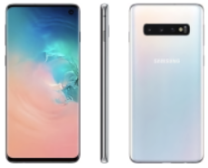

Park Gyeol
/ student
자기소개
취미
활동
SNS
GALAXY S3
GALAXY S4
GALAXY S5
GALAXY S6
GALAXY S7
GALAXY S8
GALAXY S9
GALAXY S10
GALAXY S20
GALAXY S21
GALAXY S10
 올해를 위해 작년을 기다린 사람들이 많았습니다.
갤럭시 시리즈의 10번째 모델들이 나오기 때문이죠. 그 기대에 부흥하듯 많은 것들이 변화해서 출시되었습니다.
가장 높은 사양을 가진 s10+를 기준으로 하겠습니다. 사양은 엑시노스 9820, 최대 12GB 램, 6.4인치 3040x1440 해상도를 가진 디스플레이,
전면 2개 후면 3개 총 5개의 카메라 4100mAh의 배터리를 탑재했습니다.
사실 사양이 숫자에 불과해지기 시작한 지 조금 지난 시점이었지만 스펙시트를 보고 엄청난 충격을 받았었습니다.
이러다가 요즘 컴퓨터에 많이 쓰는 16GB 램까지 오는 것 아닐까?. 카메라는 몇 개까지 늘어날까? 등등이 있었습니다.
또한, 펀치 홀 카메라를 탑재하여 상하 베젤을 거의 삭제 시켰고 온 스크린 지문인식을 탑재하여
그동안 지문인식을 할 때 카메라 렌즈를 자꾸 건드리게 된다는 단점을 엄청난 기술력으로 보완하였습니다.
또한, ONE UI 출시로 인해 그동안 발전은 하고 있었지만 별로였던 UI 부분에서도 엄청난 발전을 보여주었습니다.
또한 버즈 등을 핸드폰으로 충전할 수 있도록 무선 배터리 공유 기능 또한 선보였고 안드로이드가 그동안 계속 품고 있었던 발연 문제도 파워풀 쿨링 시스템을 이용하여 보완하였습니다.
갤럭시S10 5G는 갤럭시 시리즈 중 5G를 가장 먼저 지원하는 스마트폰이 되었었습니다.
업그레이드가 된 부분만 보더라도 어마어마한 내용들이 계속 나오는 스마트폰이었습니다.
디자인 또한 지금까지 잘 써먹던 것들을 버리지 않고 그대로 이어가서 예쁜 디자인이었습니다.
갤럭시s10을 홍보할 때 포인트는 너무나도 많지만 3가지만 꼽자면 드디어 탑재된 온 스크린 지문인식,
상하 베젤을 획기적으로 줄여준 펀치 홀 카메라, 어마어마하게 깔끔해진 ONE UI를 꼽을 것 같습니다.
5G는 삼성의 잘못이 아니라 통신사의 잘못이지만 상용화가 제대로 돼서 4G보다 빠른 속도를 체험할 수 있다의 정도가 못되기 때문에 꼽지 않았습니다.